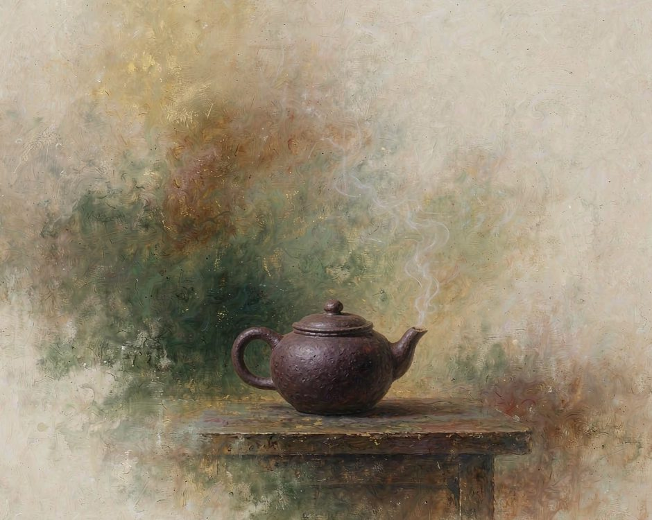
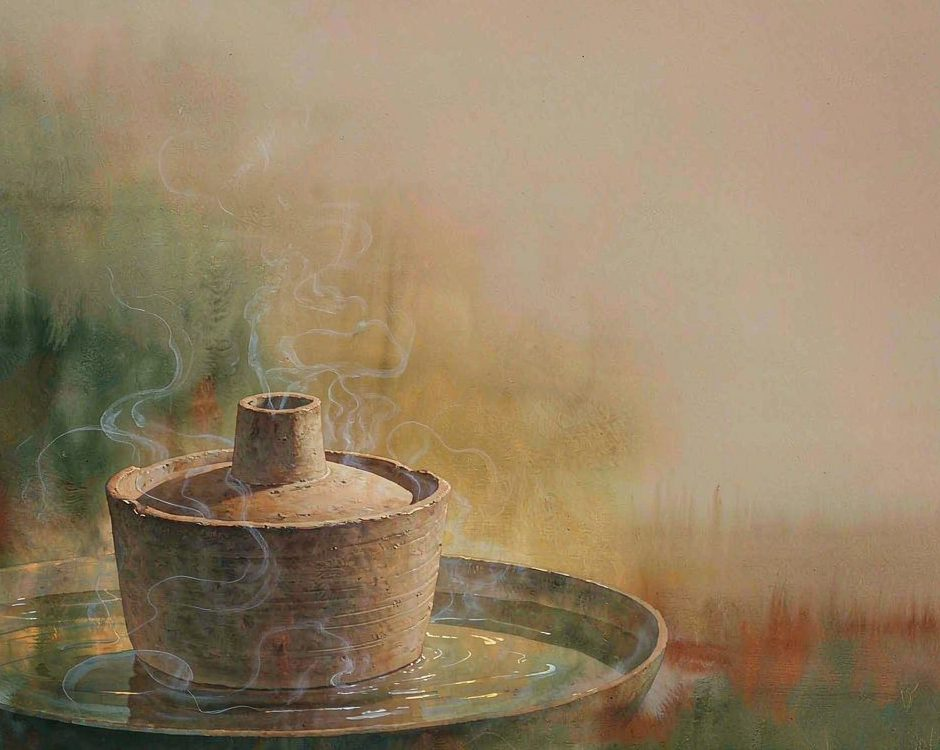
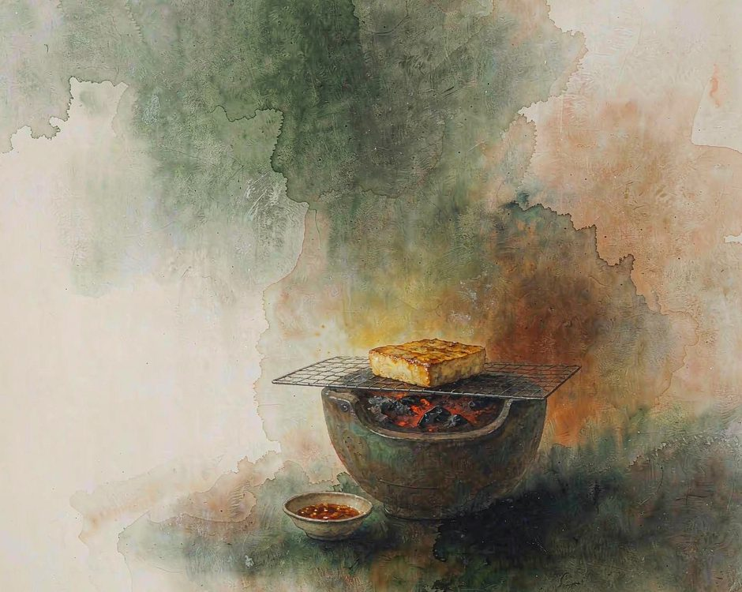

建水有一口鍋，不裝水。

蒸氣從底下燒上來，穿過鍋心那根空心管子，撞到鍋蓋內側，凝成水滴，一滴一滴落回鍋裡燉的雞上。全程沒有加過一滴水。
一口不裝水的鍋，煮出了一整鍋湯。
土不做別的，就做一口鍋
建水城東北一帶，土是紫紅色的。挖出來是塊狀，含水，黏。挖回來的泥不能直接用，要先煉。
煉泥是力氣活。泥塊攤開，加水，反覆踩、揉、捶，把裡面的空氣擠乾淨。踩到泥面光滑如鏡，手指按下去不留坑，才算煉好。這一步沒有巧辦法，全靠腳和腰。
煉好的泥還要陳腐。堆起來，蓋上濕布，放上幾個月。泥在堆裡慢慢變勻，脾氣變小，塑性和燒成後才穩。陳腐過的泥，刻花時才不會崩邊。
泥料也不是隨便挖到的。建水燒了上千年的紫陶，用的是城東北黃草壩那一帶山上的土。這一片土挖了多年，淺層的已經取盡，要往深處去。深層的土顏色更沉，燒出來偏深。
挖土的人挑土有講究，看顏色、看顆粒、看濕度。挑回來的土先攤在露天晾，讓水分走掉一部分，晾過的土更耐火。
拉坯是坐在輪盤前的活。泥在手裡轉，牆那一排壺看著隨意，其實每一把的圓都不是一次拉成的。拉壞了，敲掉，回泥堆裡去。
拉坯的手是冷的。冬天在室外拉，手指凍得發僵，泥太涼會裂，得先用溫水把手和泥捂一捂。熟練之後手上有數，泥到多少轉多少，手腕鬆一點就厚，重一點就薄。厚薄全在手腕上，差一點就廢一把。
然後是裝飾。刻花、填泥，用筆填色。建水紫陶的畫是另一樣本事，畫完要陰乾，急不得。裝窯，一千三百度上下。燒窯那幾天不能離人，火要看。顏色是燒出來的，不是畫上去的。
最要緊的是不上釉。別的陶要上釉，釉是玻璃質，密，不透氣。紫陶不施釉，燒出來有微孔。所以它透氣、不燙手、裝茶不悶。用久了手澤養出來，會越來越潤。
土不做別的，就做一口鍋。
這口鍋的用法，和別的鍋不一樣
汽鍋是建水陶的一種，形狀像一口小圓鍋，鍋心有一根空心管子，叫汽嘴。
用法是把雞塊碼進鍋裡，丟幾片薑、幾段蔥，蓋上鍋蓋，整鍋放到水盆上。底下燒水，蒸氣從鍋底的汽嘴鑽上來，充滿整個鍋腔。蒸氣碰到鍋蓋內側和鍋壁，涼了，凝成水珠，一滴一滴落回鍋裡。
這就是湯的來源。鍋裡從頭到尾沒有加過水。那鍋湯，是外面的水走了一趟變成的。

這件事只有陶鍋做得到。鐵鍋和砂鍋都得加水，水在鍋裡從頭待到尾。汽鍋是另一路，水從外面進來，繞一圈，凝成湯，再落回鍋裡。鍋不存水，鍋只管讓水換了個地方。
所以這道菜的火候很要緊。火太大，凝的水多，湯就渾。火太小，凝不出多少，味就淡。要的是剛剛夠。
熬油、煮茶、烤豆腐，都是同一個道理，鍋裡那件事急不得。
建水人做汽鍋雞，常配草芽。草芽是紅河一帶的水生菜，根粗莖嫩，掐得出白漿。另起一鍋煮米線，米線是當天現擠的米漿做的，煮出來滑。雞湯澆在米線上，這一碗裡全是紅河的水。
草芽也有吃法。掐下來的草芽洗淨，不用下鍋，蘸著蘸水直接生吃，脆得能聽見響聲。這道菜吃的是水邊那一口清爽，和汽鍋雞的熱正好分開。
建水人吃米線也有講究。湯要滾燙，燙到米線進去三秒就熟。涼了就塌，塌了就沒有那股滑。滾水沖下去的那一下，講究的是快。
豆腐要一顆一顆數
建水烤豆腐跟別處不一樣，用的是小炭爐，一顆一顆烤。

豆腐是磨漿點成的。磨得細，點得穩，才壓得住烤。太嫩的進炭爐一翻就碎，要老一點的，撐得住。
烤的時候要守著。翻面，壓一壓，刷一點油。烤到兩面起泡、顏色轉黃，才起。起早了裡面還生，起老了就硬了。吃的時候按顆算。一顆一顆夾起來，配一小碟蘸水。蘸水是本地的吃法，小米辣、蒜、醬油調出來，辣得很直接。
建水人吃豆腐按顆數，不按塊數。一桌人坐下來，數著吃，一顆一顆夾。這跟按份吃不一樣，份是估的，顆是看得見的。看得見的量，吃起來心裡有數。
這一顆豆腐從磨漿到入口要過十幾道手，每一道都要有人守著。
誠實的部分
有一件事得說出來。現在建水做壺的人，年輕的在減少。
一個手藝人從學泥到能獨立拉一把壺，要好幾年。練基本功那一兩年，拉壞的幾百把，敲成泥，重新來。這段沒人付錢，全靠自己熬。
市場上也開始亂。機制壺和手工壺混在一起賣，價錢差得很大。有些買的人分不出來。分不出來的結果是好手藝被壓價。還有一層，紫陶的價值一半在器，一半在用。買回去擺著不用，透氣性和養器的效果都體現不出來。它是拿來用的，不是拿來看的。
有人開始拍視訊，直播間裡紫陶賣得很熱鬧。熱鬧是好事。可熱鬧裡，做的和賣的常常不是同一個人。做的人在窯邊，賣的人在鏡頭前。中間那幾道工序，容易被省掉。
省掉的往往是慢的那幾道。陳腐不能省，拉坯不能省，陰乾不能省。工藝少了，器物就還在，可它不再是建水的器物，只是形狀像建水的器物。
形狀可以仿，手仿不了。
這些照實說，是因為不想把它寫得太好聽。手藝還在，人在變少，這件事糊不過去。
想種回去
不必會拉坯，可先用。
建水老街一到早上，擺攤的、拉坯的、賣茶的擠在一起。窯變色的壺、未上釉的素坯、上了彩的成品擺在一起賣，價格差得很大。慢慢看，看那些沒上色的。素坯最老實，它還沒有被畫過，只用土說話。買壺的人先摸一遍，摸過之後說話就謹慎了。
買一把紫陶壺，別買擺件，買能用的。泡茶、裝水、裝米。用上三個月，看變化。紫陶會記住手。
或者試一次煉泥的替代動作。買一小塊陶土，揉、壓、捏，捏成歪的也沒關係。這個動作的意思是，土是可以被手改變的。城裡很少有這種能被手改變的材料。泥在手裡會告訴你它到哪一步了。太濕會粘手，太乾會裂，這個判斷只能靠手。手上有了這個判斷，捏別的東西也會準一點。
然後把這件事說給一個人聽。說出去的時候不帶著炫耀，是一條線索。聽到的人或許也去摸一摸陶土，或者去買一把不是機制的壺。
一個人摸，三個人摸，一件事就開始了。
（小練習。今天用手捏一樣東西，泥也好麵也好，捏完煮熟或者烤乾，看它變不變形。）
你手上現在有哪一件陶器。